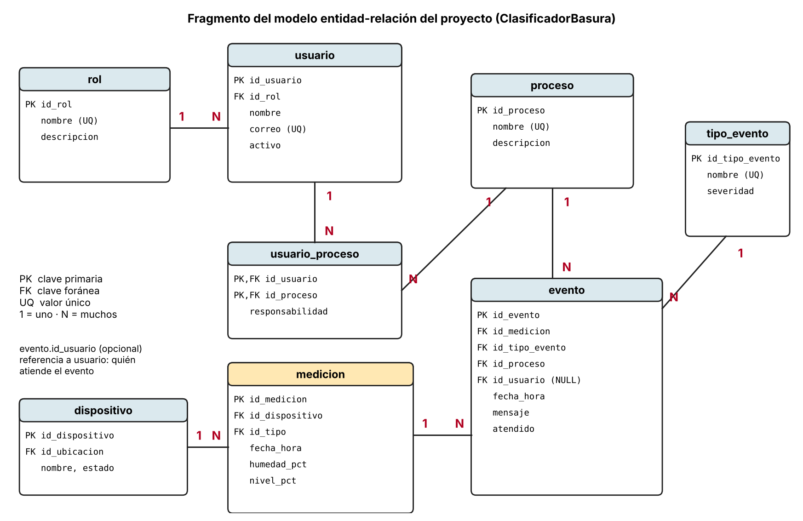
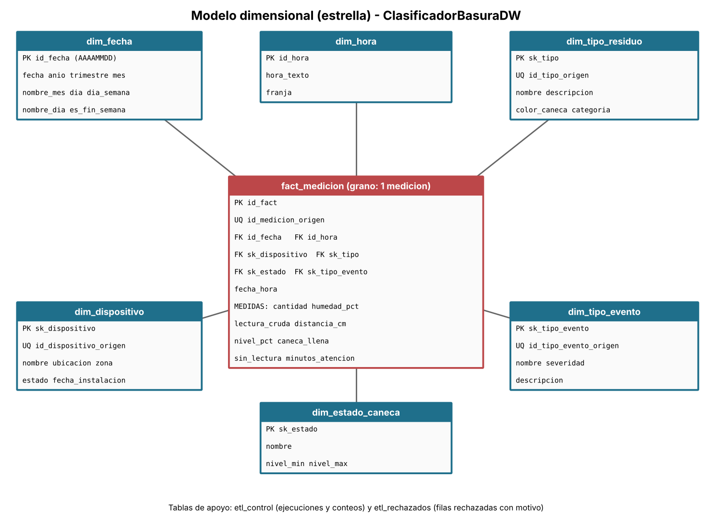
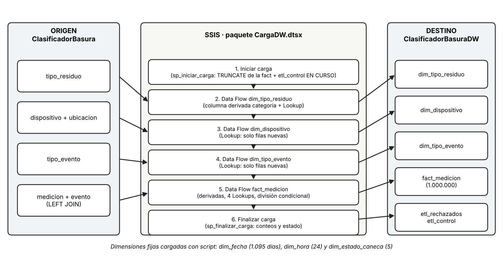

Metodología y cronogramaCRISP-DM: etapas, actividades y evidencias
Comprensión del negocio
Se definió el problema de la recolección sin información y las preguntas que debe responder el tablero.
Comprensión de los datos
Se estudiaron las lecturas del ESP32 (humedad, sensor inductivo, distancia) y se diseñó la base relacional ClasificadorBasura.
Preparación de los datos
Se simuló 1.000.000 de mediciones y se cargaron con un proceso ETL en SSIS hacia ClasificadorBasuraDW, con validaciones de conteos, nulos y rechazados.
Modelado
Esquema en estrella: una tabla de hechos (una fila por medición) y seis dimensiones, con medidas DAX para los indicadores.
Evaluación
Cada indicador del tablero se comparó con consultas SQL sobre la bodega y sobre el archivo de origen.
Despliegue
Tablero publicado en Power BI y presentado en este sitio, con hallazgos y decisiones.
| Fase CRISP-DM | Actividades | Evidencia verificable | Periodo |
|---|---|---|---|
| 1. Comprensión del negocio | Definir el problema, el escenario de ciudad inteligente y las preguntas del análisis | Planteamiento, justificación y objetivos de este sitio | Inicio del módulo |
| 2. Comprensión de los datos | Estudiar las lecturas del ESP32 y diseñar la base relacional | Modelo relacional y diccionario de datos | Actividad 1 |
| 3. Preparación de los datos | Simular 1.000.000 de mediciones, cargarlas y validarlas; ETL a la bodega | Scripts SQL, CSV, paquete CargaDW.dtsx, tablas etl_control y etl_rechazados | Actividad 1 (hasta el 11 de noviembre de 2026) |
| 4. Modelado | Modelo en estrella y medidas DAX | Diagrama de la bodega y 7 medidas | Actividad 1 y 2 |
| 5. Evaluación | Comparar el tablero con consultas SQL; validar grupos, faltantes y atípicos | Sección de validación del análisis | Actividad 2 (12 y 13 de noviembre de 2026) |
| 6. Despliegue | Publicar el tablero, integrarlo en el sitio y documentar | URL del sitio, tablero interactivo, informe y video | Actividad 2 (13 de noviembre de 2026) |
Desarrollo de la soluciónMódulo, usuarios, procesos, dispositivos, funcionalidades, arquitectura y tecnologías
Descripción del módulo
Sistema de clasificación de residuos con estaciones de captura. Cada residuo que entra a la estación se clasifica en METAL, SECO u ORGÁNICO, se mide el llenado de la caneca y se registra la lectura; si la medición supera un umbral, se genera un evento que activa un proceso de atención.
Usuarios (roles)
- Administrador: configura el sistema y los umbrales.
- Operario de aseo: recoge y vacía las canecas.
- Técnico de mantenimiento: repara y calibra dispositivos y sensores.
- Analista de datos: analiza las mediciones y los eventos.
Procesos
- 1. Clasificación de residuos
- 2. Monitoreo de nivel de canecas
- 3. Gestión de alertas
- 4. Recolección y vaciado
- 5. Mantenimiento de dispositivos
Dispositivos
- Microcontrolador ESP32
- Sensor inductivo (metal)
- Sensor de humedad (seco u orgánico)
- Sensor ultrasónico (nivel de llenado)
- Sensor infrarrojo, servomotor y motor paso a paso (mecanismo de clasificación)
Funcionalidades
- Clasificar cada residuo en tres canecas.
- Medir el nivel de llenado y detectar caneca llena.
- Registrar cada medición en la base de datos.
- Generar eventos (nivel alto, caneca llena, falla de sensor, vaciado) y alertas por correo desde Node-RED.
- Analizar los datos en un tablero interactivo.
Arquitectura
| Capa | Tecnología | Función |
|---|---|---|
| Captura | ESP32 y sensores | Clasifica el residuo y mide humedad y nivel |
| Transporte | WiFi, HTTP POST /residuo | Envía un JSON por cada residuo |
| Integración | Node-RED | Recibe el JSON y llama un procedimiento almacenado |
| Operativa | Azure SQL: ClasificadorBasura | Base relacional |
| Analítica | Azure SQL: ClasificadorBasuraDW | Modelo en estrella |
| ETL | SSIS (Visual Studio) | Carga del modelo relacional al almacén |
| Visualización | Power BI y este sitio web (GitHub Pages) | Tablero interactivo y documentación |
Gestión de los datosModelos relacional y multidimensional
Modelo relacional (ClasificadorBasura)
Once tablas: rol, usuario, proceso, usuario_proceso, ubicacion, dispositivo, tipo_residuo, tipo_evento, medicion, evento y las tablas de paso. La medición guarda fecha y hora, dispositivo, tipo, humedad, lectura cruda, distancia, nivel y caneca llena; el evento se separa de la medición y referencia el proceso que lo atiende.


Tabla de hechos
fact_medicion: una fila por medición (un residuo clasificado por un dispositivo en un instante), con cantidad, humedad, lectura cruda, distancia, nivel, caneca llena, sin lectura y minutos de atención.
Dimensiones
dim_fechadim_horadim_dispositivodim_tipo_residuodim_estado_canecadim_tipo_eventoIndicadores (medidas DAX)
Total residuos · Dispositivos activos · Eventos de alerta · Pct caneca llena (11,35 %) · Pct sin lectura (0,59 %) · Nivel promedio · Eventos por 1000 residuos.
Simulación del millón de mediciones1 de noviembre de 2025 al 31 de octubre de 2026, 8 dispositivos, semilla fija 2026 (reproducible)
| Regla | Definición |
|---|---|
| Peso por día | Lunes a viernes 1,0; sábado 0,55; domingo 0,35 |
| Calendario | Vacaciones de fin de año ×0,30; mitad de año (15 jun a 26 jul) ×0,40; evento institucional 20 a 24 de abril ×2,0; semanas de parciales ×1,5 |
| Hora | Picos de 8 a 11 h, de 12 a 14 h (almuerzo) y de 15 a 17 h; casi nulo de 22 a 5 h |
| Dispositivos | Cafetería 22 %, Entrada principal 15 %, Biblioteca 14 %, Bloque de aulas A 14 %, Bloque B 12 %, Laboratorio 8 %, Zona deportiva 8 %, Parqueadero 7 % |
| Tipo por ubicación (metal/seco/orgánico) | Cafetería 10/35/55; Biblioteca 10/70/20; Zona deportiva 20/40/40; Parqueadero 30/55/15; las demás 20/45/35 |
| Llenado | La distancia baja de 10 cm (vacía) a 2 cm (llena) en ciclos de 160 a 319 residuos; luego se vacía. nivel = (6 − distancia) × 25, limitado entre 0 y 100 |
| Fallas del sensor | 0,5 % de lecturas del ultrasonido sin dato al azar y una falla prolongada del parqueadero del 3 al 9 de agosto de 2026 (60 % de sus lecturas) |
Proceso ETL en SSISPaquete CargaDW.dtsx: del modelo relacional al DW

| Paso | Qué hace |
|---|---|
| 1. Iniciar carga | Ejecuta sp_iniciar_carga: vacía la tabla de hechos, registra la ejecución EN CURSO en etl_control y guarda su identificador en una variable |
| 2 a 4. Dimensiones | Cargan dim_tipo_residuo (con el atributo categoria generado en una columna derivada), dim_dispositivo (une dispositivo y ubicación) y dim_tipo_evento. Un Lookup sobre la clave de origen inserta solo las filas nuevas |
| 5. Hecho | Une medicion con evento, calcula el estado de la caneca y los minutos de atención, obtiene las claves sustitutas con cuatro Lookups y separa con una división condicional las filas válidas de las rechazadas |
| 6. Finalizar carga | Ejecuta sp_finalizar_carga con los conteos; el estado es CORRECTO si extraídas = cargadas + rechazadas |
Por qué ese orden
Las dimensiones se cargan antes que el hecho porque este necesita sus claves sustitutas; si el hecho se cargara primero, los Lookup no las encontrarían y las filas irían a etl_rechazados. La recarga es controlada (TRUNCATE de la fact y UNIQUE en id_medicion_origen), por eso se puede ejecutar varias veces sin duplicar.
Resultados de la carga y calidadEvidencias verificables
| Concepto | Esperado | Obtenido |
|---|---|---|
| Filas extraídas del origen | 1.000.000 | 1.000.000 |
| Filas cargadas en fact_medicion | 1.000.000 | 1.000.000 |
| Filas rechazadas | 0 | 0 |
| Cuadre extraídas = cargadas + rechazadas | Cumple | Cumple (etl_control: ejecuciones 5 y 7 CORRECTO) |
| Segunda ejecución sin duplicados | 1.000.000 | 1.000.000 |
| Ejecución 6 | - | ERROR por caída de la conexión con Azure; quedó registrada en etl_control |
Dos ejecuciones se interrumpieron durante la carga por cortes de la conexión con Azure SQL; se redujo el lote de la carga rápida a 10.000 filas y la siguiente terminó bien.